Fair banking for all: Building a
trust-based financial experience
Oportunity space
In 2018, the Colombian financial landscape was ripe for disruption. While traditional institutions were focused on simply digitizing old processes, we saw a bolder opportunity: building a 100% digital bank from the ground up. The goal was to move away from the "brick-and-mortar" constraints of the past and create a mobile-first experience that lived entirely in the user's pocket. Our mission was defined by two core objectives:
Proving "Fair Banking": We wanted to challenge the status quo by offering a value proposition built on radical transparency. This meant eliminating the hidden fees and "small print" that had long frustrated Colombian consumers.
Building the MVP: We set out to design, prototype, and launch the first version of the Lulo Bank app. By working with a closed group of early adopters, we rigorously tested our first two products: a credit card and a savings account.
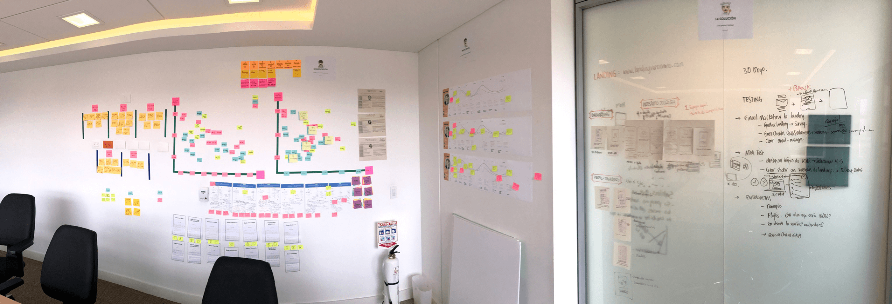
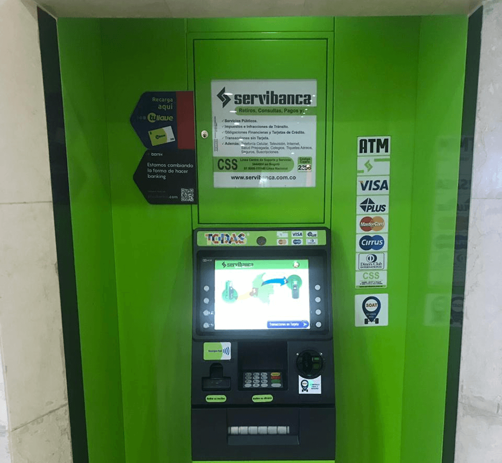
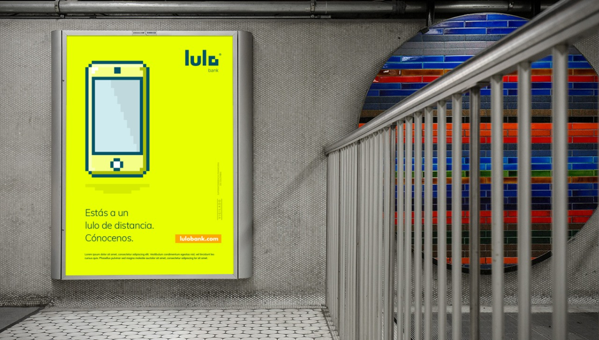
Hidden costs & unfair fees
Users are tired of "surprise" charges like handling fees and the GMF (4x1000). They don't just want lower costs; they want total clarity on where their money is going.
Credit anxiety
Unclear interest calculations and complex payment structures create a sense of helplessness. Users feel trapped by products they don't fully understand.
Service without soul
Long wait times and scripted, impersonal answers make users feel like a number rather than a person. There is a deep need for empathetic, effective support.
The "Fine Print" trap
Discovering charges for unsolicited services, such as insurance policies they never signed up for, leaves users feeling cheated and distrustful.
Broken promises
When the reality of a service doesn't match the marketing, trust is shattered. Users are looking for a bank that actually does what it says it will do.
Uncovering the human side of personal finance
To build a bank that truly felt "fair," we had to go beyond assumptions. We needed to see the friction for ourselves. We mapped the entire user journey—from the moment someone thinks about opening an account to the daily reality of managing their money—to find out exactly where the traditional system was failing. How We Uncovered the Truth:
Field research & on-site observation:
We didn’t just look at spreadsheets; we went to where the friction happens. By observing real-world behavior in physical branches, we tracked traffic flow, wait times, and how people interacted with technology like ATMs. This allowed us to witness the "invisible" bottlenecks and the body language of frustrated customers first-hand.
Deep-dive Interviews:
If observation told us what was happening, interviews told us why. We sat down for one-on-one conversations with customers to peel back the layers of their financial lives. These sessions helped us capture the qualitative insights—the anxieties, motivations, and unmet desires—that data alone could never reveal.


User experience journey: Unrestricted investment loan

User experience journey: Unrestricted investment loan


Lending user experience: Vision story boarding

Lending user experience: Vision story boarding


Designing all major journeys
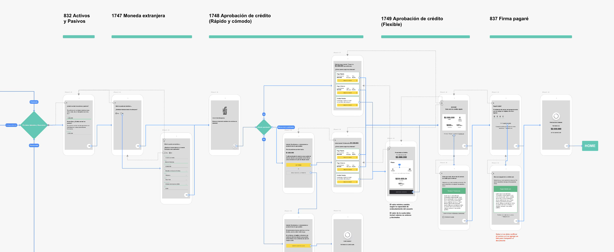
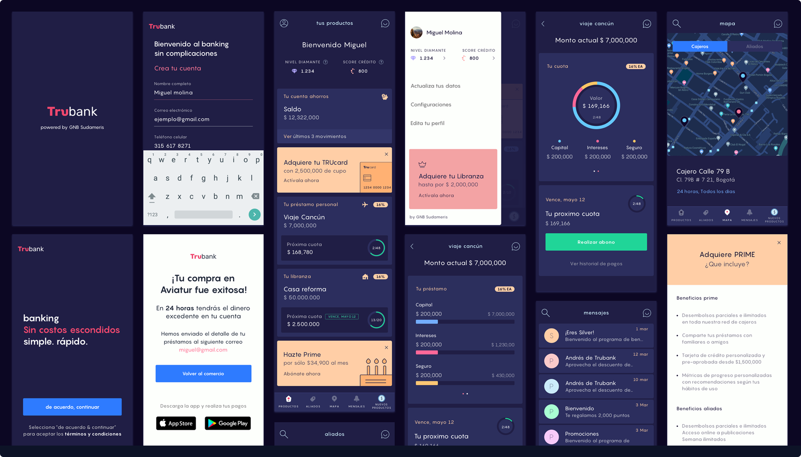
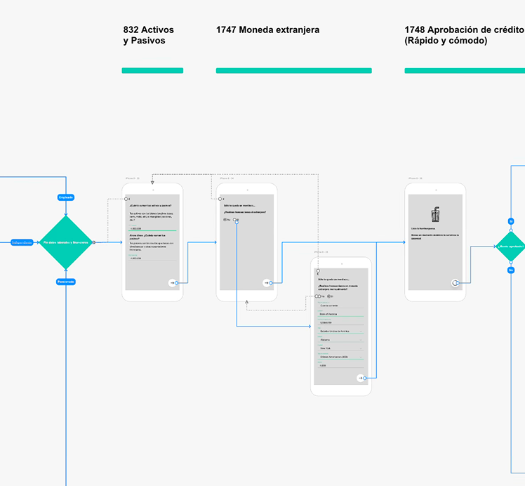
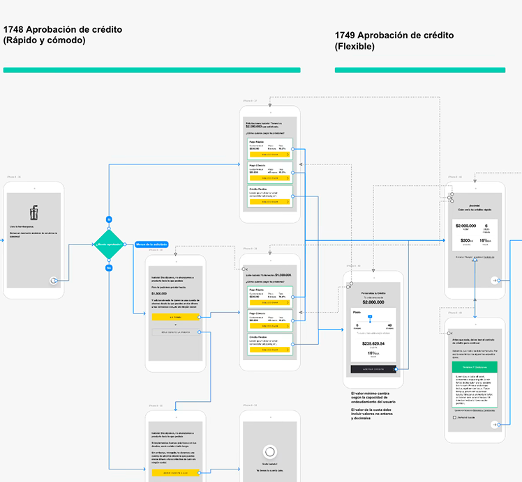
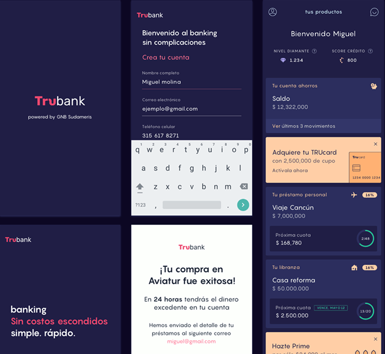
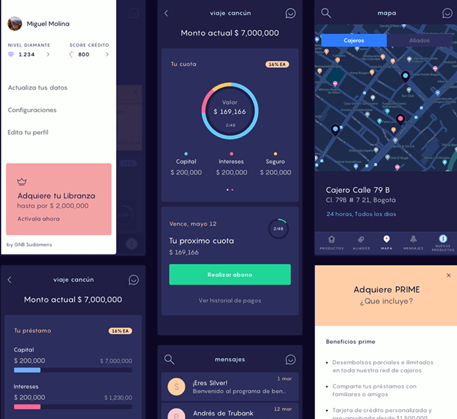
Taking Lulo Bank from an ambitious vision, to a bank that millions of Colombians rely on today.
Outcomes
2 million users & counting
By 2024, Lulo surpassed the 2 million user mark, cementing our position as a high-growth neobank and a leader in digital transformation.
A "Pocket" revolution
Our "Pockets" savings feature became a fan favorite. With millions of pockets created, we proved that intuitive design could genuinely help people manage their money better.
Unmatched satisfaction
Lulo achieved some of the highest Customer Satisfaction Index (CSI) scores in the Colombian financial sector, proving that "fair banking" is a competitive advantage.
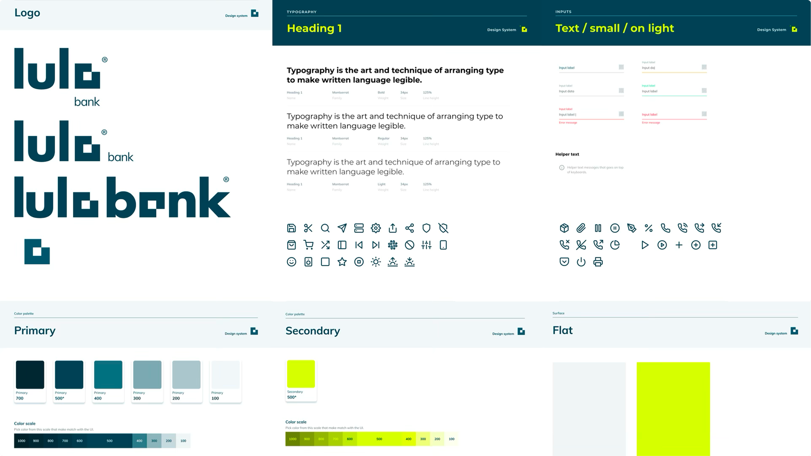
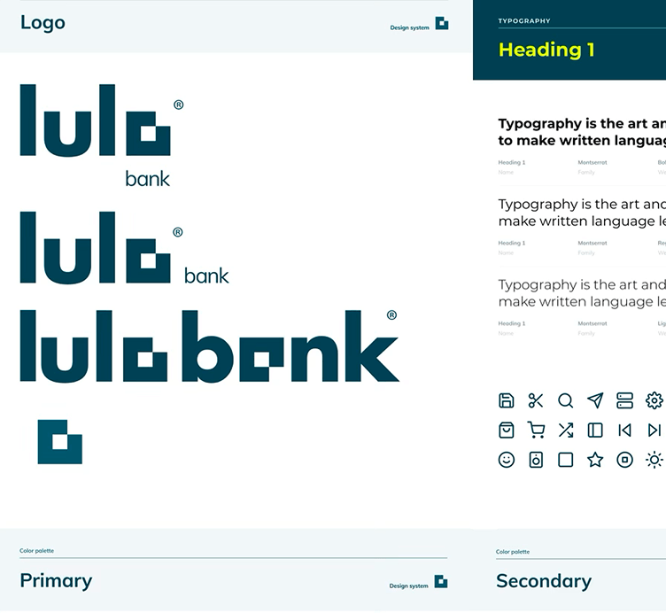
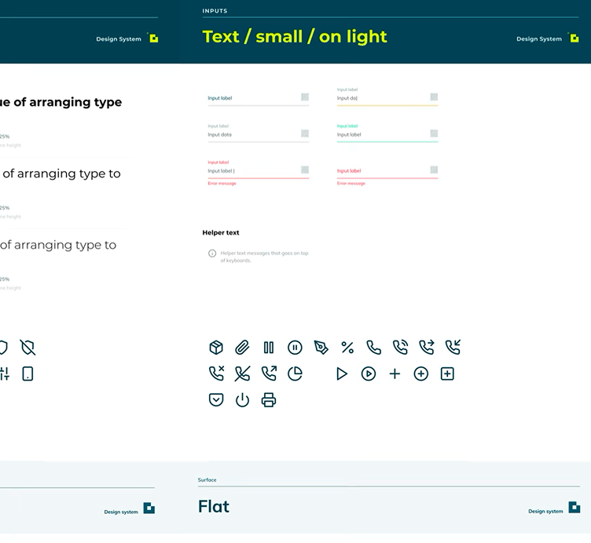
App interaction prototypes


My role: Bridging strategy, craft, and culture
Continuous Discovery & Learning:
I led the research and testing efforts throughout the development cycle. My goal was to move beyond "validation" and into true experimentation—translating raw user insights into meaningful product features.
Evolving the Visual Identity:
I acted as a bridge during our initial partnership with a branding agency, and then took the lead in translating those brand values into a distinctive, high-fidelity UI and a scalable visual language for the digital product.
Designing the Full Journey:
In collaboration with the engineering and product teams, I designed the core end-to-end flows. This included a seamless onboarding process that simplified complex security and regulatory requirements without sacrificing the user experience.
Building the Design Foundation:
I was responsible for recruiting and nurturing Lulo’s first design team. Beyond hiring, I established the workflows and "rituals" that defined our culture—prioritizing open communication, product ownership, and a shared passion for craft.